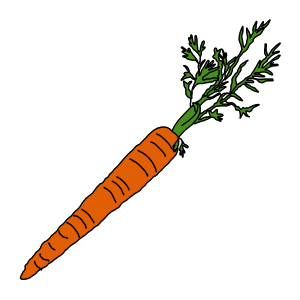
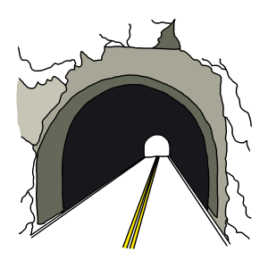

<!DOCTYPE html>
<html>
<head>
    <title>Mandarin Statistical Learning Task</title>
    <!-- jsPsych and Plugins -->
    <script src="https://unpkg.com/jspsych@7.3.4"></script>
    <script src="https://unpkg.com/@jspsych/plugin-html-keyboard-response@1.1.3"></script>
    <script src="https://unpkg.com/@jspsych/plugin-html-button-response@1.2.0"></script>
    <script src="https://unpkg.com/@jspsych/plugin-image-keyboard-response@1.1.3"></script>
    <script src="https://unpkg.com/@jspsych/plugin-audio-keyboard-response@1.1.3"></script>
    <script src="https://unpkg.com/@jspsych/plugin-preload@1.1.3"></script>
    <script src="https://unpkg.com/@jspsych/plugin-survey-html-form@1.0.3"></script>
    
    <link href="https://unpkg.com/jspsych@7.3.4/css/jspsych.css" rel="stylesheet" type="text/css" />
    
    <style>
        body { background-color: #f4f7f6; font-family: 'Helvetica Neue', Arial, sans-serif; }
        .jspsych-content { max-width: 800px; }
        .prime-img { max-height: 60vh; width: auto; border: 5px solid #fff; border-radius: 12px; box-shadow: 0 4px 15px rgba(0,0,0,0.1); }
        .stim-container { display: flex; justify-content: space-around; align-items: flex-start; width: 100%; margin: 30px 0; }
        .stim-wrapper { display: flex; flex-direction: column; align-items: center; width: 280px; }
        .stim-image { width: 280px; height: auto; border: 3px solid #fff; border-radius: 10px; }
        .key-label { margin-top: 10px; font-size: 15px; font-weight: 500; color: #333; background: #ffffff; padding: 6px 12px; border-radius: 6px; box-shadow: 0 2px 4px rgba(0,0,0,0.05); }
        .fixation { font-size: 72px; font-weight: 300; color: #555; }
        
        /* Form & Consent Styling */
        .form-question { margin-bottom: 20px; text-align: left; background: #fff; padding: 18px; border-radius: 8px; box-shadow: 0 2px 4px rgba(0,0,0,0.05); }
        .form-question label { font-weight: bold; display: block; margin-bottom: 8px; }
        .form-question input[type="number"], .form-question select { padding: 8px; width: 100%; max-width: 300px; border: 1px solid #ccc; border-radius: 4px; }
        .checkbox-group { display: flex; flex-direction: column; gap: 8px; }
        .checkbox-group label { font-weight: normal; display: inline-block; margin-left: 5px; }
        
        .consent-container, .demographics-container { 
            max-width: 650px; 
            margin: auto; 
            padding-bottom: 15vh; 
            text-align: center;
        }

        .consent-body { text-align: left; background: #fff; padding: 20px; border-radius: 8px; box-shadow: 0 2px 4px rgba(0,0,0,0.05); margin-bottom: 20px; }
        .consent-body ul { line-height: 1.6; margin-top: 10px; }
        .consent-body li { margin-bottom: 10px; }

        .custom-submit-btn {
            background-color: #333;
            color: #fff;
            border: 1px solid transparent;
            border-radius: 4px;
            padding: 0.6em 1.2em;
            font-size: 15px;
            font-family: 'Open Sans', 'Helvetica Neue', Arial, sans-serif;
            cursor: pointer;
            margin-top: 20px;
            transition: background-color 0.2s;
        }
        .custom-submit-btn:hover { background-color: #555; }
    </style>
</head>
<body></body>
<script>
    const RUNTIME_CONFIG = {
        primeDuration: 500, 
        numBlocks: 4        
    };

    // Category Array matching repository folder structure
    const allItems = [
        { name: 'drums', cat: 'music' }, { name: 'guitar', cat: 'music' },
        { name: 'flute', cat: 'music' }, { name: 'piano', cat: 'music' },
        { name: 'dog', cat: 'mammal' }, { name: 'lion', cat: 'mammal' },
        { name: 'cow', cat: 'mammal' }, { name: 'horse', cat: 'mammal' },
        { name: 'hammer', cat: 'carpenter' }, { name: 'nails', cat: 'carpenter' },
        { name: 'saw', cat: 'carpenter' }, { name: 'screwdriver', cat: 'carpenter' },
        { name: 'gun', cat: 'weapon' }, { name: 'knife', cat: 'weapon' },
        { name: 'sword', cat: 'weapon' }, { name: 'cannon', cat: 'weapon' },
        { name: 'chair', cat: 'furniture' }, { name: 'couch', cat: 'furniture' },
        { name: 'table', cat: 'furniture' }, { name: 'bed', cat: 'furniture' },
        { name: 'apple', cat: 'fruit' }, { name: 'orange', cat: 'fruit' },
        { name: 'banana', cat: 'fruit' }, { name: 'grape', cat: 'fruit' },
        { name: 'hand', cat: 'body' }, { name: 'mouth', cat: 'body' },
        { name: 'nose', cat: 'body' }, { name: 'ear', cat: 'body' },
        { name: 'mountain', cat: 'earth' }, { name: 'river', cat: 'earth' },
        { name: 'ocean', cat: 'earth' }, { name: 'volcano', cat: 'earth' }
    ];

    const activeEmotions = ['neutral', 'disgust', 'fear', 'happy'];
    const jsPsych = initJsPsych();

    /** 1. STRATEGY B: SUBJECT-LEVEL RANDOMIZED 25% MAPPING **/
    function getSubjectConditionMapping() {
        let shuffled = jsPsych.randomization.shuffle(allItems.map(i => i.name));
        let mapping = {};
        activeEmotions.forEach((emo, index) => {
            let group = shuffled.slice(index * 8, (index + 1) * 8);
            group.forEach(name => mapping[name] = emo);
        });
        return mapping;
    }
    
    const currentMapping = getSubjectConditionMapping();

    function generateTrialVariables() {
        return allItems.map(item => {
            const possibleFoils = allItems.filter(f => f.cat !== item.cat);
            const foil = jsPsych.randomization.sampleWithoutReplacement(possibleFoils, 1)[0];
            const targetIsLeft = Math.random() < 0.5;
            return {
                target_name: item.name,
                audio_path: `assets/audio/${item.name}.mp3`,
                prime_cat: currentMapping[item.name],
                left_img: targetIsLeft ? `assets/stims/${item.cat}/${item.cat}_${item.name}.png` : `assets/stims/${foil.cat}/${foil.cat}_${foil.name}.png`,
                right_img: targetIsLeft ? `assets/stims/${foil.cat}/${foil.cat}_${foil.name}.png` : `assets/stims/${item.cat}/${item.cat}_${item.name}.png`,
                correct_key: targetIsLeft ? 'f' : 'j'
            };
        });
    }

    const trialVariables = generateTrialVariables();

    /** 2. SECURITY GATEKEEPER BLOCK **/
    let passkey_correct = false;

    const passkey_trial = {
        type: jsPsychSurveyHtmlForm,
        html: `
            <div style="padding: 20px; text-align: center;">
                <h2>Enter Access Passkey</h2>
                <p>Please enter your 5-digit authorization code to access the study:</p>
                <input type="text" id="passkey-input" name="passkey" required autocomplete="off" 
                       style="padding: 10px; font-size: 18px; text-align: center; letter-spacing: 2px; text-transform: uppercase;">
                <br><br>
            </div>`,
        button_label: 'Verify Key',
        on_finish: function(data) {
            const enteredKey = data.response.passkey.trim().toUpperCase();
            if (enteredKey === "4GH73") {
                passkey_correct = true;
            } else {
                alert("Invalid Passkey. Access Denied.");
            }
        }
    };

    const gatekeeper_loop = {
        timeline: [passkey_trial],
        loop_function: function() {
            return !passkey_correct;
        }
    };

    /** 3. INFORMED CONSENT BLOCK **/
    const consent_trial = {
        type: jsPsychSurveyHtmlForm,
        button_label: 'hidden',
        on_start: function() {
            const style = document.createElement('style');
            style.id = 'hide-native-btn-consent';
            style.innerHTML = '#jspsych-survey-html-form-next { display: none !important; }';
            document.head.appendChild(style);
        },
        html: `
            <div class="consent-container">
                <h2>Informed Consent & Eligibility</h2>
                <div class="consent-body">
                    <p>Please read the following information carefully before deciding whether to participate in this research study:</p>
                    <ul>
                        <li>
                            <strong>Eligibility Requirements:</strong>
                            <ul> 
                                <li>Participants must be at least 18 years old.</li>
                                <li>Participants must complete this experiment on a computer (e.g., not a tablet or smartphone).</li>
                                <li>Participants must have <strong>zero prior familiarity or knowledge of Mandarin Chinese</strong>.</li>
                            </ul>
                        </li>
                        <li><strong>Task Description:</strong> You will listen to short spoken Mandarin audio words while viewing images on screen and matching sound-meaning pairs using keyboard responses ('F' and 'J').</li>
                        <li><strong>Duration:</strong> The study takes approximately <strong>10 minutes</strong> to complete.</li>
                        <li><strong>Risks & Confidentiality:</strong> There are no anticipated physical or psychological risks beyond typical computer use. Data is transferred via DataPipe and is stored remotely on Open Science Framework. Though we cannot guarantee confidentiality, all collected data is stored securely without personal identifiers.</li>
                        <li><strong>Benefits:</strong> There are no direct personal benefits from participating in this study other than the monetary compensation provided via Prolific upon completion.</li>
                    </ul>
                </div>

                <div class="form-question">
                    <div class="checkbox-group">
                        <label style="font-weight: bold; cursor: pointer;">
                            <input type="checkbox" id="consent-check" name="consent_agreed" value="yes" required>
                            I confirm that I have read and understood the information above, I meet the eligibility criteria (no prior knowledge of Mandarin Chinese), and I consent to participate in this study.
                        </label>
                    </div>
                </div>

                <button type="submit" class="custom-submit-btn">I Agree & Continue</button>
            </div>`,
        on_finish: function() {
            const styleRule = document.getElementById('hide-native-btn-consent');
            if (styleRule) { styleRule.remove(); }
        }
    };

    /** 4. DEMOGRAPHICS BLOCK **/
    const demographics_trial = {
        type: jsPsychSurveyHtmlForm,
        button_label: 'hidden', 
        on_start: function() {
            const style = document.createElement('style');
            style.id = 'hide-native-btn';
            style.innerHTML = '#jspsych-survey-html-form-next { display: none !important; }';
            document.head.appendChild(style);
        },
        html: `
            <div class="demographics-container">
                <h2>Demographic Information</h2>
                <p>Please fill out the details below before we begin the task:</p>
                
                <div class="form-question">
                    <label for="age">How old are you?</label>
                    <input type="number" id="age" name="age" min="18" max="100" required>
                </div>

                <div class="form-question">
                    <label for="gender">How do you describe yourself?</label>
                    <select id="gender" name="gender" required>
                        <option value="" disabled selected>Select an option</option>
                        <option value="male">Male</option>
                        <option value="female">Female</option>
                        <option value="non-binary">Non-binary/third gender</option>
                        <option value="prefer_not_to_say">Prefer not to say</option>
                    </select>
                </div>

                <div class="form-question">
                    <label>Choose one or more races that you consider yourself to be:</label>
                    <div class="checkbox-group">
                        <div><input type="checkbox" id="race_white" name="race" value="white"><label for="race_white">White or Caucasian</label></div>
                        <div><input type="checkbox" id="race_black" name="race" value="black"><label for="race_black">Black or African American</label></div>
                        <div><input type="checkbox" id="race_native" name="race" value="native_american"><label for="race_native">American Indian/Native American or Alaskan Native</label></div>
                        <div><input type="checkbox" id="race_asian" name="race" value="asian"><label for="race_asian">Asian</label></div>
                        <div><input type="checkbox" id="race_hawaiian" name="race" value="pacific_islander"><label for="race_hawaiian">Native Hawaiian or other Pacific Islander</label></div>
                        <div><input type="checkbox" id="race_other" name="race" value="other"><label for="race_other">Other</label></div>
                        <div><input type="checkbox" id="race_pns" name="race" value="prefer_not_to_say"><label for="race_pns">Prefer not to say</label></div>
                    </div>
                </div>

                <div class="form-question">
                    <label for="hispanic">Are you of Spanish, Hispanic, or Latino origin?</label>
                    <select id="hispanic" name="hispanic" required>
                        <option value="" disabled selected>Select an option</option>
                        <option value="no">No</option>
                        <option value="yes">Yes</option>
                        <option value="prefer_not_to_say">Prefer not to say</option>
                    </select>
                </div>

                <div class="form-question">
                    <label for="education">What is the highest level of education you have completed?</label>
                    <select id="education" name="education" required>
                        <option value="" disabled selected>Select an option</option>
                        <option value="some_high_school">Some high school or less</option>
                        <option value="high_school_diploma">High school diploma or GED</option>
                        <option value="some_college">Some college, but no degree</option>
                        <option value="associates_technical">Associates or technical degree</option>
                        <option value="bachelors">Bachelor’s degree</option>
                        <option value="graduate">Graduate or professional degree (MA, MS, MBA, PhD, JD, MD, DDS etc.)</option>
                        <option value="prefer_not_to_say">Prefer not to say</option>
                    </select>
                </div>

                <button type="submit" class="custom-submit-btn">Continue to Experiment</button>
            </div>`,
        on_finish: function(data) {
            const styleRule = document.getElementById('hide-native-btn');
            if (styleRule) { styleRule.remove(); }
        
            const selectedRaces = Array.isArray(data.response.race) ? data.response.race.join(',') : data.response.race;
        
            jsPsych.data.addProperties({
                participant_age: data.response.age,
                participant_gender: data.response.gender,
                participant_race: selectedRaces || 'not_specified',
                participant_hispanic: data.response.hispanic,
                participant_education: data.response.education
            });
        }
    };

    /** 5. INSTRUCTIONS & AUDIO PRACTICE LOOP **/
    let return_to_instructions = false;

    const instructions = {
        type: jsPsychHtmlButtonResponse,
        stimulus: function() {
            return `
                <div style="text-align: left; max-width: 700px; margin: auto;">
                    <h2>Study Instructions</h2>
                    <ul>
                        <li>At the beginning of each trial, you will see a <strong>fixation cross (+)</strong>.</li>
                        <li>Next, a photo will flash briefly. This photo is not needed for the task and may be disregarded.</li>
                        <li>Then, you will hear a <strong>Mandarin word</strong> and see two photos. Throughout the experiment, your task is to match the Mandarin word you hear with one of the images.</li>
                        <li>Press <strong>'F'</strong> if the word matches the <strong>left</strong> image.</li>
                        <li>Press <strong>'J'</strong> if the word matches the <strong>right</strong> image.</li>
                    </ul>
                    <p>Please try to be as accurate and as fast as possible.</p>
                </div>`;
        },
        choices: ['Continue to Audio Check'],
        on_finish: function() {
            return_to_instructions = false;
            var context = jsPsych.pluginAPI.audioContext();
            if (context !== null && context.state === 'suspended') {
                context.resume();
            }
        }
    };

    const audio_test_trial = {
        type: jsPsychHtmlButtonResponse,
        stimulus: function() {
            return `
                <div style="max-width: 750px; margin: auto; text-align: center;">
                    <h2>Audio & Practice Check</h2>
                    <p style="text-align: left; font-size: 16px; line-height: 1.5;">
                        This resembles a typical trial of this experiment. You will hear an audio clip and match it to one of the images. 
                        In this case, the Mandarin Chinese word means <strong>'carrot'</strong>, so you would press <strong>'F'</strong> on your keyboard to select the image of the carrot.
                    </p>
                    <p style="text-align: left; font-size: 15px; color: #d9534f; font-weight: bold;">
                        Please click the button below to test your audio. Ensure your sound is turned on and clear before proceeding!
                    </p>
                    
                    <div class="stim-container">
                        <div class="stim-wrapper">
                            
                            <div class="key-label">Press <strong>'F'</strong> if the word matches the <strong>left</strong> image.</div>
                        </div>
                        <div class="stim-wrapper">
                            
                            <div class="key-label">Press <strong>'J'</strong> if the word matches the <strong>right</strong> image.</div>
                        </div>
                    </div>
                    
                    <audio id="practice-audio-elem" src="assets/example/example_carrot.mp3" preload="auto"></audio>
                    <button type="button" class="custom-submit-btn" style="margin-bottom: 20px; background-color: #007bff;" onclick="document.getElementById('practice-audio-elem').play()">
                        🔊 Test Audio
                    </button>
                </div>
            `;
        },
        choices: ['Return to Instructions', 'I can hear the audio clearly - Begin Experiment'],
        on_finish: function(data) {
            if (data.response === 0) {
                return_to_instructions = true;
            } else {
                return_to_instructions = false;
                
                // CRITICAL FOR SAFARI: Unlock & resume Web Audio API right as the user clicks 'Continue'
                try {
                    var ctx = jsPsych.pluginAPI.audioContext();
                    if (ctx !== null && ctx.state === 'suspended') {
                        ctx.resume();
                    }
                } catch(e) {
                    console.log("AudioContext resume attempted:", e);
                }
            }
        }
    };

    const instructions_practice_loop = {
        timeline: [instructions, audio_test_trial],
        loop_function: function() {
            return return_to_instructions;
        }
    };

    /** 6. PRELOAD MANIFEST **/
    const all_images = [
        'assets/example/example_carrot.png',
        'assets/example/example_tunnel.png'
    ];
    activeEmotions.forEach(e => { for(let i=1; i<=12; i++) all_images.push(`assets/primes/${e}/${e}_${i}.jpg`); });
    allItems.forEach(i => all_images.push(`assets/stims/${i.cat}/${i.cat}_${i.name}.png`));
    
    const all_audio = ['assets/example/example_carrot.mp3'];
    allItems.forEach(i => all_audio.push(`assets/audio/${i.name}.mp3`));

    const preload = {
        type: jsPsychPreload,
        images: all_images,
        audio: all_audio,
        message: "Loading study assets... Please wait.",
        continue_after_error: true
    };

    /** 7. EXPERIMENTAL PROCEDURE BLOCK **/
    const fixation = {
        type: jsPsychHtmlKeyboardResponse,
        stimulus: '<div class="fixation">+</div>',
        choices: "NO_KEYS",
        trial_duration: 500
    };

    const prime_trial = {
        type: jsPsychHtmlKeyboardResponse,
        stimulus: function() {
            const cat = jsPsych.timelineVariable('prime_cat');
            const randIdx = Math.floor(Math.random() * 12) + 1;
            return ``;
        },
        choices: "NO_KEYS",
        trial_duration: RUNTIME_CONFIG.primeDuration
    };

    const test_trial = {
        type: jsPsychAudioKeyboardResponse,
        stimulus: jsPsych.timelineVariable('audio_path'),
        choices: ['f', 'j'],
        response_allowed_while_playing: true,
        prompt: function() {
            return `<div class="stim-container">
                        
                        
                    </div>`;
        },
        trial_duration: 4000,
        data: function() {
            return {
                phase: 'test',
                target: jsPsych.timelineVariable('target_name'),
                condition: jsPsych.timelineVariable('prime_cat'),
                correct_response: jsPsych.timelineVariable('correct_key')
            };
        },
        on_finish: function(data) {
            data.correct = jsPsych.pluginAPI.compareKeys(data.response, data.correct_response);
        }
    };

    const main_procedure = {
        timeline: [fixation, prime_trial, test_trial],
        timeline_variables: trialVariables,
        randomize_order: true,
        repetitions: RUNTIME_CONFIG.numBlocks
    };

    /** 8. PROLIFIC COMPLETION TERMINAL **/
    const prolific_completion = {
        type: jsPsychHtmlButtonResponse,
        choices: ['Exit Experiment'],
        stimulus: function() {
            return `
                <div style="padding: 20px;">
                    <h2>Thank you for your participation!</h2>
                    <br>
                    <p style="font-size: 18px;">Please use this code to receive credit for your participation in Prolific: <strong>123456</strong></p>
                    <br>
                </div>
            `;
        }
    };

    // Execution sequence: Gatekeeper -> Consent -> Demographics -> Instructions Loop -> Preload -> Main Task -> Completion
    jsPsych.run([
        gatekeeper_loop, 
        consent_trial, 
        demographics_trial, 
        instructions_practice_loop, 
        preload, 
        main_procedure, 
        prolific_completion
    ]);
</script>
</html>
